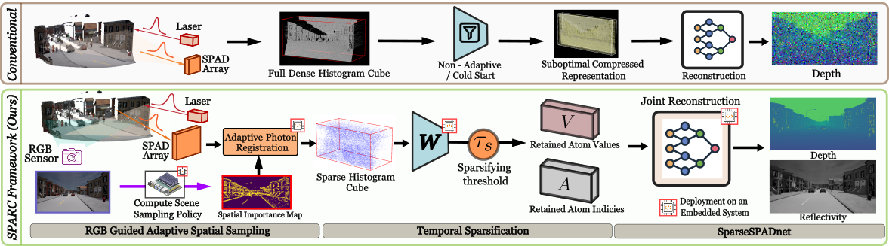

Research project Under review
SPARC: Scene-Guided Photon Acquisition and Sparse Representation for SP-LiDAR Compression
Designed an acquisition-aware compression framework that uses RGB scene priors to guide photon sampling, sparsifies retained measurements, and jointly reconstructs dense depth and reflectivity. Evaluated on simulated driving scenes, real measurements, and an NVIDIA Jetson AGX Xavier.